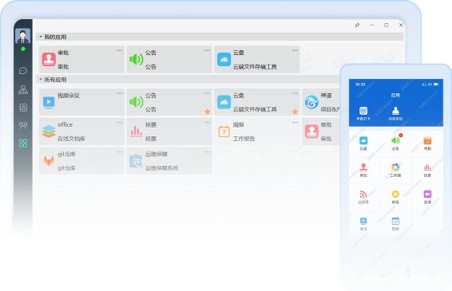
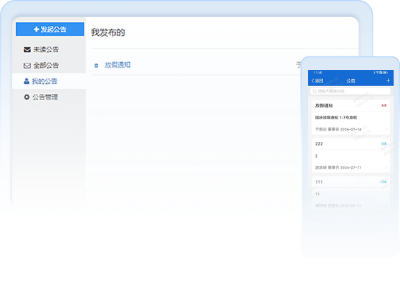
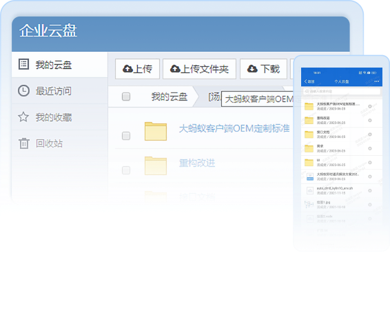
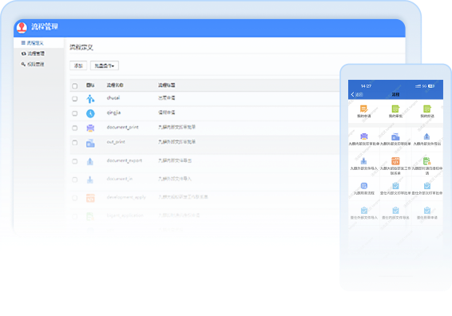
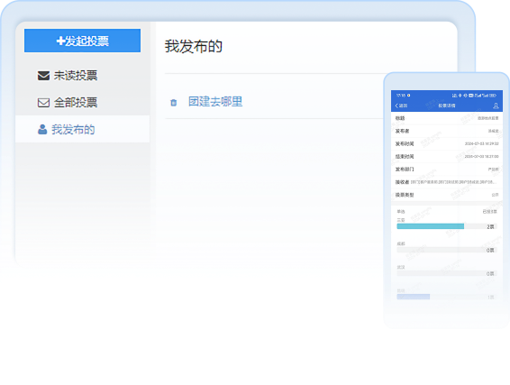

-
应用中心将内部已有系统以应用方式接入，统一收纳在工作台，为员工提供丰富的办公应用。考勤、签到，流程审批，工作一手搞定；工作报告轻松处理，机构动态时刻掌握。
-
通知公告政策、公告、公司新闻，消息快速推送，全员广播。
-
云盘企业云盘，统一文件库，资料文档快速分享，敏感文件可设访问权限。。
-
审批支持用户自定义审批流程，快速搭建企业内部审批流，完成线上各类流程流转，实现高效的无纸化办公。
-
 考勤打卡支持固定时间上下班、灵活排班、自由上下班和外出打卡；后台自动生成考勤报表，提高考勤效率。
考勤打卡支持固定时间上下班、灵活排班、自由上下班和外出打卡；后台自动生成考勤报表，提高考勤效率。 -
投票支持发起投票，可设置单选、多选等投票模式，可根据活动类型和投票需求进行选择。